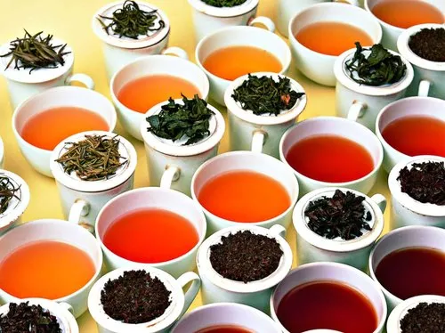

Tea Introduction |
|
|
Tea plantations started by the British were initially taken over by the government in 1960s, but have been privatized and managed by plantation companies. The total extent of tea cultivation in 2019 in Sri Lanka is approximately 202,985ha (Source: Annual Report – Sri Lanka Tea Board) Ceylon tea from Sri Lanka, acclaimed as the best tea in the world has its inherent unique characteristics and reputation running through more than a century. The influence of climatic conditions of its plantation imparts to the product a variety of flavours and aromas, synonymous with quality. Sri Lanka is renowned for its high-quality tea and as the 4th biggest tea producing country globally, has a production share of 10% in the international sphere, and one of the world's leading exporters with a share of around 19% of the global demand. |
Sri Lanka’s tea cultivators and manufacturers are the custodians of the traditional, orthodox method of black tea production. This is still agreed by most experts to produce the best black tea. Even with the technological improvements introduced over the last half a century, the orthodox method is relatively slow and labour-intensive; but as the tea planters and traders of Sri Lanka have always maintained, good tea cannot be hurried. Nor, oddly enough, can it be delayed. The time devoted to each of the processes of tea manufacture must be finely judged if a quality product is to be obtained. This is a matter of the tea-maker’s judgment, for the right timing depends on the moisture content of the plucked leaf, the temperature and humidity conditions prevailing over the period of manufacture, and a variety of other factors. Although the process of making fine black tea is simple in its essentials, expertise, experience and a ‘feel’ for the task are essential to success.
01 Plucking |
|||
| The manufacturing process commences when the leaves are picked or ‘plucked’. Plucking calls for discrimination and dexterity and is carried out mainly by women. Only the uppermost foliage on every stem is picked – the famous ‘two leaves and a bud’ – and the stem itself must be left undamaged. Fiddly work, but a skilled tea-plucker can collect up to 20kg. (44lb.) of leaf daily. | |||
02 Weighing |
|||
| On arrival at the factory, the raw leaf is weighed. The total weight recorded for the day’s batch provides a benchmark for quality assessment at the end of the process of manufacture. After weighing, the tea is laid out for withering. | |||
03 Withering |
|||
| The raw leaf is ‘fluffed’ and spread out to dry on racks or troughs in a well-lit and ventilated space. It will lie here for 18-24 hours, slowly losing moisture and undergoing physical and chemical changes essential to manufacture. Over-withering can be fatal, so the process is carefully monitored. It is complete when about two-thirds of the moisture present in the raw leaf has evaporated. | |||
04 Rolling |
|||
| The withered leaf is now ready for rolling. This is a mechanized process in which the leaf cells are ruptured to release enzymes and bring them into contact with air so that aeration can commence. The bits of broken and rolled leaf are called dhools. The dhools are then broken up and sifted before aeration. | |||
05 Aeration |
|||
| During this critical stage of manufacture, important chemical reactions take place through the action of air on the leaf tissue. The rolled, broken leaf is spread out on tables and exposed for a period that varies between 20 minutes and five hours, depending on a variety of factors, including what kind of final product is desired. The withered tea leaf is a rusty, coppery orange colour. Again, timing is critical: under-aerated tea tastes raw and green, over-aerated tea is soft and tasteless. Aeration is also sometimes known as ‘fermentation’ or ‘oxidation’. | |||
06 Drying |
|||
| When the right amount of aeration has occurred, the leaf is dried in a desiccator or ‘firing chamber’ at 99-104˚C (210-220˚F) to prevent further chemical changes. This shrinks and darkens the leaf, resulting in the product known as black tea. This completes the actual manufacture. | |||
07 Grading |
|||
| The size of the leaf particles in your teapot bears no relation to quality per se, but it does affect the colour and strength of the brew. Manufactured tea is graded by leaf size using a mechanical sifter. ‘Leaf’ grades contain the largest pieces, ‘broken’ grades are successively smaller, while the smallest grades of all are known as ‘dust’. Larger grades tend to command higher auction prices. |  | ||
08 Bulk Packing |
|||
| To ensure consistency of appearance, flavour and quality, each grade of a particular consignment is thoroughly stirred up and mixed together. After this, the tea is bulk-packed – either in the traditional wooden chests (in former times these were lined with lead) or in more modern aluminum-lined paper sacks. | |||
09 Tea Bags and CTC |
|||
| Sri Lankan manufacturers responded to the growing worldwide popularity of tea bags by commencing manufacture in [year]. Tea that is destined for bagging is not rolled in the traditional way but processed by a CTC (‘cut, tear and curl’) machine, which breaks the withered leaf into very small pieces. This fragmented leaf is ideal for tea bags; it infuses rapidly, producing a dark, strong brew. |